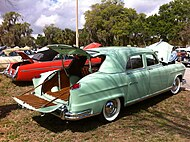

Хетчбек
Хетчбек (англ. hatchback від hatch — «люк» і back — «ззаду») — це конфігурація кузова автомобіля із задніми дверима, які відкриваються вгору, щоб забезпечити доступ до основного салону автомобіля як до вантажного відділення, а не просто до окремого багажника.. Хетчбеки можуть мати відкидні сидіння другого ряду, де інтер’єр можна змінити, щоб визначити пріоритет пасажирського або вантажного об’єму. Хоча ранні приклади конфігурації кузову можна простежити до 1930-х років, словник Merriam-Webster датує сам термін 1970 роком. Стиль кузова хетчбек продається по всьому світу на автомобілях розміром від суперміні до невеликих сімейних автомобілів, а також автомобілів представницького класу та деяких спортивних автомобілів. Вони є основним компонентом позашляховиків.
Історія
Перший серійний хетчбек був виготовлений Citroën у 1938 році: версія (11CV) "Commerciale" їхньої серії Citroën Traction Avant 1934–1957 років. Початковим цільовим ринком були торговці, яким потрібно було перевозити громіздкі предмети, наприклад м’ясники, пекарі, виноградарі та бакалійники. Перед Другою світовою війною двері багажника складалися з двох частин: верхньої секції, яка відкидалася від рівня даху, і нижньої секції, яка відкидалася знизу. Коли виробництво Commerciale відновилося після війни, двері багажника стали цілісними, які відкидалися від рівня даху, відповідно до дизайну, який використовувався на більшості хетчбеків. У 1949 році Kaiser-Frazer представила хетчбеки Vagabond і Traveler. Ці моделі були стилізовані подібно до типового седана 1940-х років, повністю зберігаючи свій профіль; однак вони включали двері багажника з двох частин, як у першому Citroën 11CV Commerciale. Моделі Vagabond і Traveller також мали відкидні задні сидіння та спільний об’єм для пасажирів і вантажу. Конструкція не була повністю ані седаном, ані універсалом, але складане заднє сидіння забезпечувало великий 2,4 метри завдовжки внутрішній вантажний відсік. Ці моделі Kaiser-Frazer були описані як «перший американський хетчбек». У 1959 році British Motor Corporation (BMC) випустила версію «Countryman» економ-автомобіля Austin A40 Farina. Так само, як і його попередники A30 і A35 Countryman, це був дуже маленький універсал, але замість звичайних задніх дверей, що відкривалися вбік, у нього були горизонтально розділені двері багажника, які мали верхні двері на петлях і нижні двері на петлях. A40 Countryman 1959 року відрізнявся від седана A40 Farina 1958 року тим, що заднє скло було дещо меншим, щоб рама могла підніматися за допомогою петель, встановлених на даху, і бічних опорних стійок, так що автомобіль тепер включав горизонтальне розділення на дві частини. Нижня панель тепер була врівень з підлогою, а петлі, встановлені знизу, були посилені.
|  |

|
||
1938 Citroën Traction Avant Commerciale - 1952 показана форма |
1951 Kaiser-Frazer Vagabond |
1959 Austin A40 Farina Countryman |
1966 Jaguar E-Type з дверцятами, що відкриваються в бік |